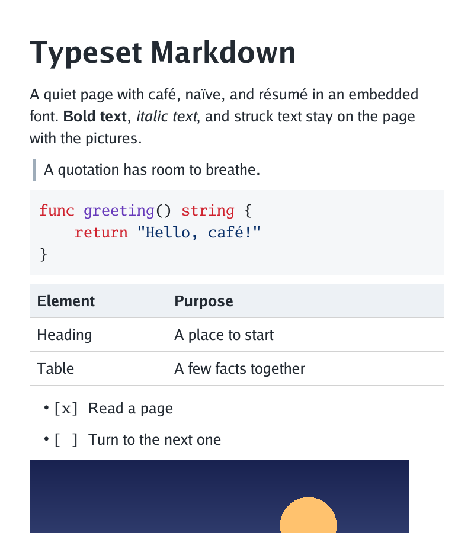
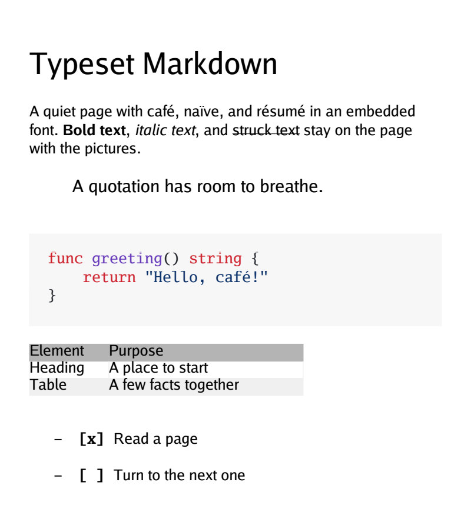
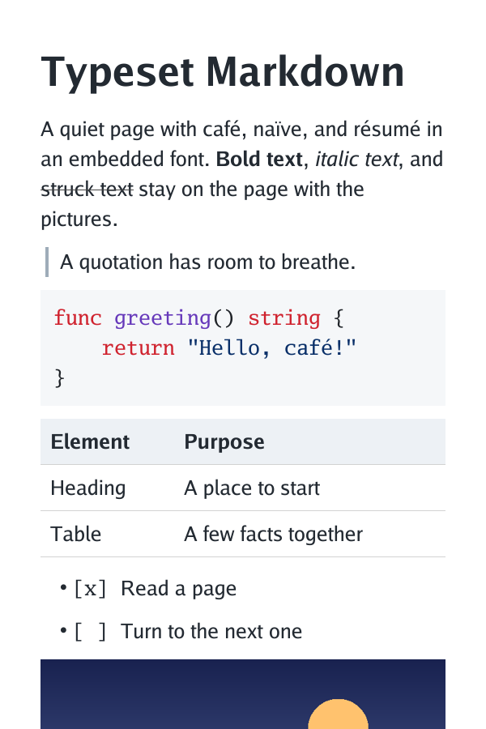
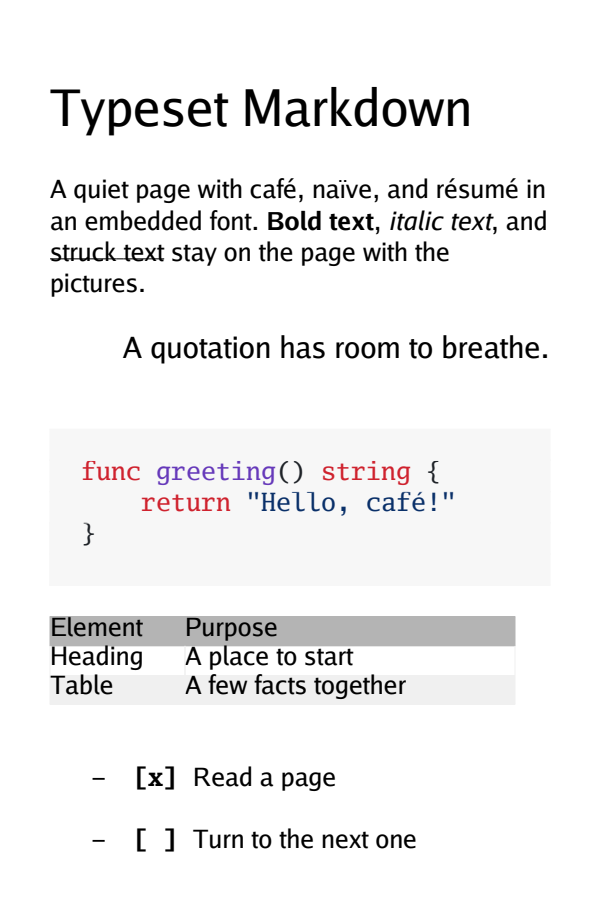
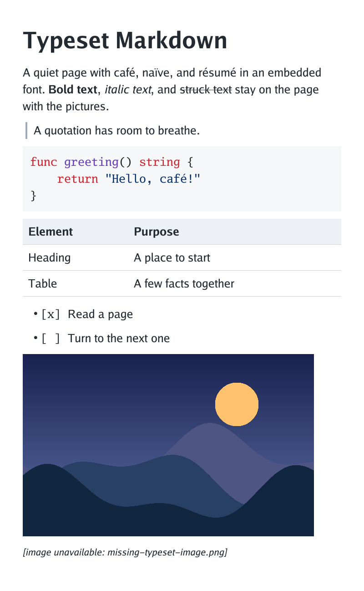
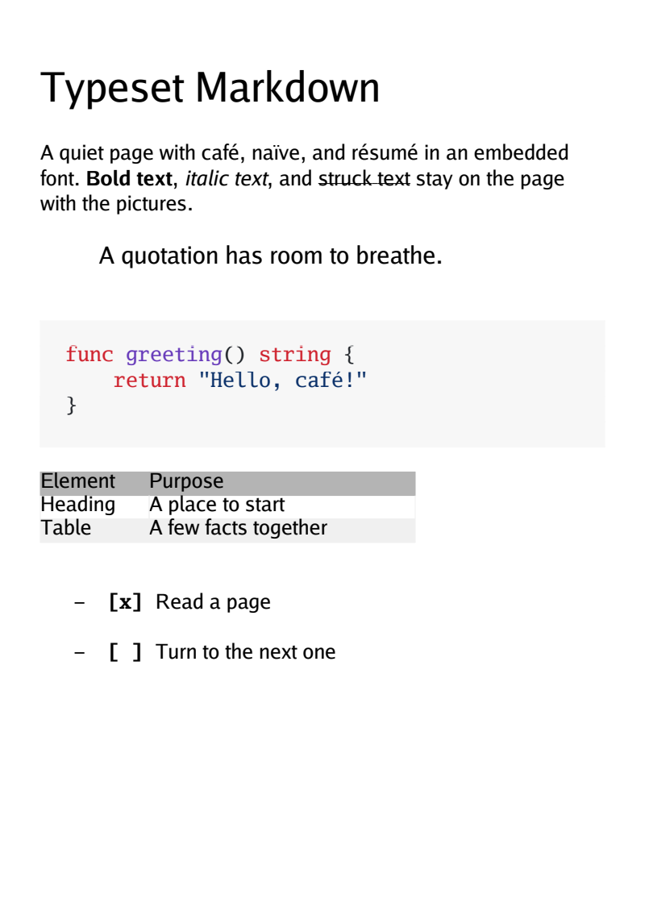
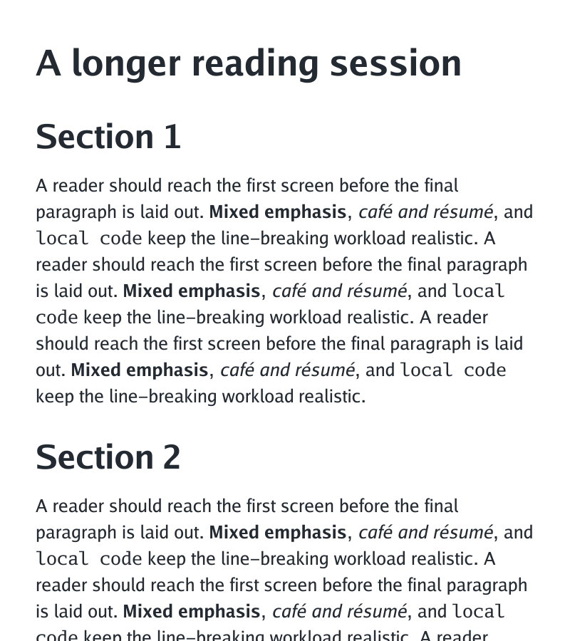
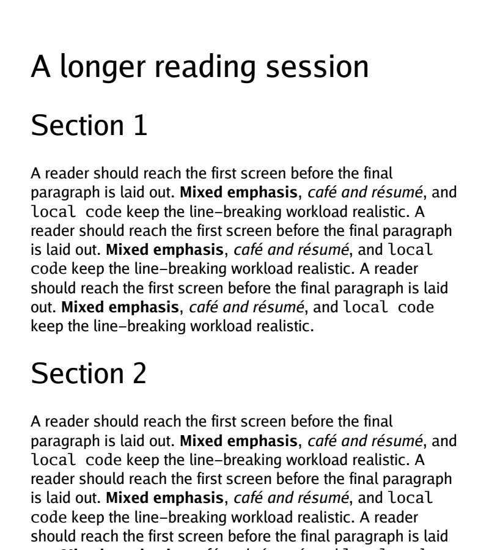

Identical source and Go font family; 25 px body text, 50 px side margins. Images are shown at native size. Scroll horizontally to compare without scaling. The direct prototype uses continuous flow. PDF retains paper pages. Both use Chroma with the GitHub code theme.
Findings · Measurements · Raw JSON




The PDF image is only its first page. The local image and missing-image placeholder are on its second page.



